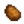
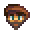

Готовка
Приготовление пищи становится доступным после первого улучшения дома. Это улучшение добавляет в дом кухню, на которой есть плита и холодильник. На плите можно готовить, а в холодильник складывать продукты: в нём есть 36 слотов для хранения предметов, как в сундуке. Холодильник уникален тем, что взаимодействует с интерфейсом готовки напрямую. В приготовлении пищи могут участвовать только ингредиенты, которые находятся в холодильнике или в инвентаре игрока. Размер холодильника можно увеличить, купив маленький холодильник.
Прежде чем готовить, игроку нужно узнать рецепт. Неизвестные рецепты недоступны, в интерфейсе готовки они показаны черным силуэтом с текстом ???. Известные рецепты серые, если игроку не хватает ингредиентов для их приготовления, однако при наведении на них курсора мышки можно посмотреть информацию о блюде. Недостающие ингредиенты подсвечиваются красным. Если всё необходимое для приготовления блюда есть в инвентаре игрока или в холодильнике, иконка рецепта подсвечивается.
Бонусы
Если съесть блюдо, дающее какие-либо бонусы, ваши существующие активные бонусы пропадут и заменятся на бонусы от только что съеденного блюда.
По-видимому, длительность бонусов от еды уменьшается по мере приближения ночи. Например, если съесть уху утром, бонус от неё будет длиться 16+ минут; если съесть её в 10 вечера, бонус продлится 2—3 минуты. Возможно, это сделано для того, чтобы бонусы от хороших блюд вроде ухи длились целый день, но тогда надо играть на обычной скорости. Если играть с модами, увеличивающими продолжительность дня, к вечеру еда будет менее ценной, чем с утра.
Достижения
С готовкой связано три достижения:
- Повар (Приготовить 10 разных блюд)
- Су-шеф (Приготовить 25 разных блюд)
- Шеф-повар (Приготовить каждое из блюд)
Баги
Если съесть любую еду, которая отнимает энергию и при этом зажать и не отпускать любую кнопку движения пока проигрывается анимация, анимация движения вашего персонажа залагает и вы немного ускоритесь
Коллекция
Обратите внимание: эскарго и уха меняются местами, если сравнить меню на плите при готовке и вкладку готовых блюд в меню коллекций (показано на изображении снизу).

Первая страница
Вторая страница
| Биск из омара | Кленовый пончик | Крабовые котлетки | Креветочный коктейль | Имбирный эль | Банановый пудинг | Манговый клейкий рис | Пои | Тропическое карри | Равиоли с чернилами кальмара |
| Суп из мха |
Рецепты
| Вид | Название | Описание | Состав | Энергия / Эдоровье | Бонус(ы) | Длительность бонуса | Источник рецепта | Цена продажи | |||
|---|---|---|---|---|---|---|---|---|---|---|---|
| Яичница | Глазунья. | Нет | Нет | Первое расширение дома | |||||||
| Омлет | Он очень пышный. | Нет | Нет |
|
|||||||
| Салат | Полезный огородный салат. | Нет | Нет |
|
|||||||
| Цветная капуста с сыром | Пахнет восхитительно! | Нет | Нет |
|
|||||||
| Запеченная рыба | Запеченная рыба на подушке из трав. | Нет | Нет |
|
|||||||
| Суп из пастернака | Свежий и сытный. | Нет | Нет |
|
|||||||
| Овощное ассорти | Очень питательно. | Нет | Нет |
|
|||||||
| Полный завтрак | После такого все по плечу! |
|
|||||||||
| Жареный кальмар | Его нужно долго жевать. | Нет | Нет |
|
|||||||
| Странная булочка | Что там внутри? | Нет | Нет |
|
|||||||
| Обед на удачу | Особое блюдо. |
|
|||||||||
| Жареные грибы | Насыщенные и ароматные. |
|
|||||||||
| Пицца | Она популярна по многим причинам. | Нет | Нет |
|
|||||||
| Жаркое из фасоли | Очень здоровая пища. |
|
|||||||||
| Глазированный батат | Сладкий и сытный... Сахар придает ему карамельный привкус. | Нет | Нет |
|
|||||||
| Карповый сюрприз | Жирный и безвкусный. | Нет | Нет |
|
|||||||
| Хашбраун | Золотистые и хрустящие! |  Картофель (1) |
|
||||||||
| Блины | Двойная стопка пышных, мягких блинов. |
|
|||||||||
| Ужин из лосося | Немного лимонного сока придает ему особенный вкус. | Нет | Нет |
|
|||||||
| Рыбные тако | Пахнет так вкусно. |
|
|||||||||
| Окунь с хрустящей корочкой | Ого, панировка просто безупречна. |
|
|||||||||
| Перечные бомбочки | Панированный жгучий перец, фаршированный сыром. |
|
|||||||||
| Хлеб | Хрустящий багет. | Нет | Нет |
|
|||||||
| Суп том кха | Невероятное смешение вкусов! |
|
|||||||||
| Уха из форели | Довольно соленая. |
|
|||||||||
| Шоколадный торт | Влажный, насыщенный, с толстым слоем фаджа сверху. | Нет | Нет |
|
|||||||
| Розовый торт | Сверху на нем конфеты в виде сердечек. | Нет | Нет |
|
|||||||
| Пирог с ревенем | М-м, какой терпкий и сладкий! | Нет | Нет |
|
|||||||
| Печенье | Очень вязкое. | Нет | Нет |
|
|||||||
| Спагетти | Старая классика. | Нет | Нет |
|
|||||||
| Жареный угорь | Жирный, но богат вкусом. |
|
|||||||||
| Острый угорь | Очень острый! Осторожно. |
|
|||||||||
| Сашими | Сырая рыба, порезанная на тонкие кусочки. | Нет | Нет |
|
|||||||
| Суши-роллы | Рис с рыбой, завернутые в водоросли. | Нет | Нет |
|
|||||||
| Тортилья | Можно положить в нее что-то еще, а можно съесть просто так. | Нет | Нет |
|
|||||||
| Красное блюдо | В нем полно антиоксидантов. |
|
|||||||||
| Баклажаны с пармезаном | Терпкий, сырный, чудесный. |
|
|||||||||
| Рисовый пудинг | У него сливочный, сладкий вкус. | Нет | Нет |
|
|||||||
| Мороженое | Сложно найти того, кому оно не нравится. | Нет | Нет |
|
|||||||
| Черничный пирог | Тонкий, освежающий вкус. | Нет | Нет |
|
|||||||
| «Дары осени» | Попробуй осень на вкус. |
|
|||||||||
| Тыквенный суп | Любимое блюдо сезона. |
|
|||||||||
| Чудо-блюдо | Это блюдо дает много энергии. |
|
|||||||||
| Клюквенный соус | Праздничное угощение. |
|
|||||||||
| «Объеденье» | Ах, запах свежего хлеба и шалфея. |
|
|||||||||
| «Обед фермера» | Он даст тебе сил. | ||||||||||
| «Бургер для выживания» | Удобная закуска для исследователя. | ||||||||||
| «Морское блюдо» | Это блюдо согреет, когда подует холодный морской ветер. | ||||||||||
| «Шахтерский леденец» | С ней вам хватит энергии. | ||||||||||
| Коренья на блюде | Вам захочется добавки! | ||||||||||
| Тройной эспрессо | Намного крепче обычного кофе! | ||||||||||
| Морской пенный пудинг | Этот солёный пудинг действительно погрузит вас в морское мышление! | ||||||||||
| Суп из водорослей | В нем есть немного слизи. | Нет | Нет |
|
|||||||
| Светлый бульон | Нежный бульон с серными нотками. | Нет | Нет |
|
|||||||
| Сливовый пудинг | Традиционное праздничное лакомство. | Нет | Нет |
|
|||||||
| Артишоковый дип | Нераскрывшаяся корзинка цветка артишока. Внутри, за колючими листьям, он сытный и мясистый. | Нет | Нет |
|
|||||||
| Стир-фрай | Обжаренные овощи с рисом. | Нет | Нет |
|
|||||||
| Жареный фундук | Жарка придает богатый лесной вкус. | Нет | Нет |
|
|||||||
| Тыквенный пирог | Шелковый тыквенный крем под корочкой с хлопьями. | Нет | Нет |
|
|||||||
| Салат из редиса | Редиска такая хрустящая! | Нет | Нет |
|
|||||||
| Фруктовый салат | Вкусное сочетание летних фруктов. | Нет | Нет |
|
|||||||
| Ежевичный коблер | Другого такого вкуса не бывает. | Нет | Нет |
|
|||||||
| Клюквенная сласть | Она достаточно сладкая, чтобы перебить горечь ягод. | Нет | Нет |
|
|||||||
| Брускетта | Жареные помидоры на хрустящем белом хлебе. | Нет | Нет |
|
|||||||
| Капустный салат | Легкий, свежий, и очень полезный. | Нет | Нет |
|
|||||||
| Ризотто с папоротником | Сливочное рисовое блюдо, которое подают с обжаренными ростками папоротника. Вкус не очень яркий. | Нет | Нет |
|
|||||||
| Маффин с маком | Оказывает успокаивающий эффект. | Нет | Нет |
|
|||||||
| Рыбная похлебка | Отлично согревает после ночи на холодном море. |  Вилли (Письмо - 3+ |
|||||||||
| Биск из омара | Этот деликатный суп - фамильный рецепт Вилли. |
Вилли (Письмо - 9+ |
|||||||||
| Эскарго | Идеально приготовленные улитки в масле. | Вилли (Письмо - 5+ |
|||||||||
| Уха | Она пахнет совсем как море. На вкус, правда, гораздо лучше. | Вилли (Письмо - 7+ |
|||||||||
| Кленовый пончик | Сладкий пончик с богатой кленовой глазурью. |
|
|||||||||
| Крабовые котлетки | Крабовое мясо, хлебные крошки и яйцо в форме котлеток, зажаренные до золотистой корочки. |
|
|||||||||
| Креветочный коктейль | Дорогостоящий аперитив из свежевыловленных креветок. |
|
|||||||||
| Имбирный эль | Остренькая содовая, знаменитая своим успокаивающим действием на желудок. | Имбирный остров магазин дварфа в вулкане |
|||||||||
| Банановый пудинг | Кремовый десерт с прекрасным тропическим вкусом. | ||||||||||
| Манговый клейкий рис | Сладкое манго и кокос превращают этот рис во что-то невероятное. |
|
|||||||||
| Пои | Традиционное блюдо с тонким сладковатым вкусом. Лучше есть его свежим. | Нет | Нет |
|
|||||||
| Тропическое карри | Экзотическое ароматное карри в миске из ананаса. | ||||||||||
| Равиоли с чернилами кальмара | Дают временный иммунитет к отрицательным эффектам. | чернилами кальмара) |
Ингредиенты
Для того, чтобы приготовить всё 71 блюдо в игре, нужно минимум 77 разных предметов, 6 из которых — это готовые блюда, использующиеся в качестве ингредиентов.
В таблицах ниже предполагается, что вы используете одно приготовленное блюдо для приготовления другого (т.е. из 1 картофелины приготовите хашбраун, а потом используете хашбраун для приготовления полного завтрака. Правда, вам всё равно понадобится ещё одна картофелина, чтобы сделать хашбраун для «Морского блюда»).
Культуры
| Вид | Название | Нужное количество |
Время года | Время роста | Комментарий | Нужны для |
|---|---|---|---|---|---|---|
| Амарант | 1 | Осень | 7 дней | Нужно собирать косой. | ||
| Ананас | 1 | Лето | 14 дней | |||
| Артишок | 2 | Осень | 8 дней | Доступен со второго года. | ||
| Баклажан | 2 | Осень | 5 дней | Производит новый урожай каждые 5 дней. | ||
| Батат | 2 | Осень | 10 дней | |||
| Бок-чой | 1 | Осень | 4 дня | |||
| Дыня | 2 | Лето | 12 дней | Может стать гигантской. | ||
| Жгучий перец | 3 | Лето | 5 дней | Производит новый урожай каждые 3 дня. | ||
| Зеленая фасоль | 2 | Весна | 10 дней | Растет на шпалере.
Производит новый урожай каждые 2 дня. |
||
| Картофель | 2 | Весна | 6 дней | Иногда дает дополнительные картофелины при сборе. | ||
| Клюква | 4 | Осень | 7 дней | Производит новый урожай каждые 5 дней. | ||
| Корень Таро | 4 | Лето | 10 дней | |||
| Красная капуста | 3 | Лето | 9 дней | Доступна со второго года. | ||
| Кудрявая капуста | 2 | Весна | 6 дней | Нужно собирать косой. | ||
| Кукуруза | 2 | Лето | 14 дней | Производит новый урожай каждые 4 дня. | ||
| Мак | 1 | Лето | 7 дней | |||
| Пастернак | 2 | Весна | 4 дня | |||
| Помидор | 8 | Лето | 11 дней | Производит новый урожай каждые 4 дня. | ||
| Ревень | 1 | Весна | 13 дней | Семена продаются в магазине в пустыне. | ||
| Редис | 2 | Лето | 6 дней | Красное блюдо (1) | ||
| Свекла | 1 | Осень | 6 дней | Семена продаются в магазине в пустыне. | ||
| Синий яркоцвет | 1 | Весна | 7 дней | |||
| Тыква | 3 | Осень | 13 дней | Может стать гигантской. | ||
| Цветная капуста | 1 | Весна | 12 дней | Может стать гигантской. | ||
| Черника | 2 | Лето | 13 дней | Производит несколько ягод при сборе.
Производит новый урожай каждые 4 дня. |
||
| Чеснок | 2 | Весна | 4 дня | Доступен со второго года. |
Дикие растения
| Вид | Название | Нужное количество |
Время года | Локация | Нужны для |
|---|---|---|---|---|---|
| Дикий хрен | 1 | Весна | По всей долине | ||
| Ежевика | 2 | Осень | Город Пеликан | ||
| Зимний корень | 1 | Зима | Город Пеликан, Шахта |
||
| Кокос | 1 | Все времена года | Пустыня Калико | ||
| Лук-порей | 1 | Весна | Город Пеликан | ||
| Одуванчик | 1 | Весна | Город Пеликан | ||
| Пещерная морковка | 5 | Все времена года | Шахта | ||
| Сморчок | 1 | Весна | Пещера, Тайный лес |
||
| Съедобный папоротник | 1 | Лето | Тайный лес | ||
| Фундук | 4 | Осень | Город Пеликан | ||
| Дикая слива | 2 | Осень | Город Пеликан | ||
| Шампиньон | 3 | Весна, Осень | Пещера, Город Пеликан, Тайный лес |
Фрукты с деревьев
| Вид | Название | Нужное количество |
Растет на | Время года | Нужны для |
|---|---|---|---|---|---|
| Абрикос | 1 | Абрикосовое дерево | Весна | ||
| Яблоко | 1 | Яблоня | Осень | ||
| Манго | 1 | Манговое дерево | Лето | ||
| Банан | 1 | Банановое дерево | Лето |
Животные продукты
| Вид | Название | Нужное количество |
Дает | Комментарии | Нужны для |
|---|---|---|---|---|---|
| Ведерко молока | 11 |  Корова |
Требуется подойник | ||
| Яйцо | 8 | Курица |
Товары собственного производства
| Вид | Название | Нужное количество |
Автомат | Сырье | Время производства | Нужны для |
|---|---|---|---|---|---|---|
| Кофе | 3 | Бочонок | 2 часа | |||
| Майонез | 2 | Майонезный автомат | 3 часа | |||
| Майонез Пустоты | 1 | Майонезный автомат | 3 часа | |||
| Сыр | 3 | Пресс для сыра | 3.3 часа |
Разное
| Вид | Название | Нужное количество |
Источник | Время производства | Нужен для |
|---|---|---|---|---|---|
| Кленовый сироп | 1 | Подсочник (клен) | 7-8 дней | ||
| Чернила кальмара | 1 | Малыш-кальмар добыча, рыбный пруд содержащий кальмаров или ночных кальмаров | Зависит от популяции |
Рыба
| Вид | Название | Нужное количество | Место | Время | Сезон | Погода | Сложность | Нужны для |
|---|---|---|---|---|---|---|---|---|
| Тунец | 1 | Океан | 6:00 - 19:00 | Лето/Зима | Любая | 70 | ||
| Сардина | 2 | Океан | 6:00 - 19:00 | Весна/Осень/Зима | Любая | 30 | ||
| Лещ | 1 | Река | 18:00 - 2:00 | Любой сезон | Любая | 35 | ||
| Большеротый окунь | 1 | Горное озеро | 6:00 - 19:00 | Любой сезон | Любая | 50 | ||
| Радужная форель | 1 | Река/Горное озеро | 6:00 - 19:00 | Лето | Солнечно | 45 | ||
| Лосось | 1 | Река | 6:00 - 19:00 | Осень | Любая | 50 | ||
| Камбала | 1 | Океан | 6:00 - 20:00 | Весна/Лето | Любая | 50 | ||
| Полуночный карп | 1 | Горное озеро/Озеро | 22:00 - 2:00 | Осень/Зима | Любая | 55 | ||
| Карп | 4 | Озеро/Лесной пруд/Канализация/Пруд Тайного леса | Любое время | Любой сезон | Любая | 15 | ||
| Солнечник | 1 | Река | 6:00 - 19:00 | Весна/Лето | Солнечно | 30 | ||
| Угорь | 2 | Океан | 16:00 - 2:00 | Весна/Осень | Дождь | 70 | ||
| Кальмар | 1 | Океан | 18:00 - 2:00 | Зима | Любая | 75 | ||
| Морской огурец | 1 | Океан | 6:00 - 19:00 | Осень/Зима | Любая | 40 | ||
| Рыба (любая) | 2 | В любом месте | Любое время | Любой сезон | Любая | Н/Д | ||
| Морская водоросль | 1 | Океан | Любое время | Любой сезон | Любая | 0 | ||
| Зеленая водоросль | 5 | Шахта/Река | Любое время | Любой сезон | Любая | 0 | ||
| Белая водоросль | 2 | Шахта/Канализация | Любое время | Любой сезон | Любая | 0 |
Рыба из крабовых ловушек
| Вид | Название | Количество | Место | Шанс поимки | Требуется для |
|---|---|---|---|---|---|
| Омар | 1 | Океан | 5% | ||
| Гребешок | 1 | Океан | 15% | ||
| Рак | 1 | Пресная вода | 35% | ||
| Краб | 1 | Океан | 10% | ||
| Мидия | 1 | Океан | 35% | ||
| Креветка | 2 | Океан | 20% | ||
| Улитка | 1 | Пресная вода | 25% | ||
| Литорина | 2 | Пресная вода | 55% |
Покупные ингредиенты
Продаются у Пьера в его магазине.
Блюда, используемые в качестве ингредиентов
Продукты для приготовления этих блюд уже есть в списках выше. Сами эти блюда используются в качестве ингредиентов для приготовления других блюд.
| Вид | Название | Количество | Состав | Требуется для |
|---|---|---|---|---|
| Яичница | 1 | |||
| Хашбраун | 2 | Картофель (1) |
||
| Блины | 1 | |||
| Тортилья | 2 | |||
| Хлеб | 3 | |||
| Омлет | 1 |
Выгодные рецепты
- Смотрите также: Когда делать из рыбы сашими
Большинство готовых блюд продаются дешевле, чем их ингредиенты в сумме. Однако существует ряд рецептов, которые всегда приносят прибыль, если использовать ингредиенты самого низкого качества:
|
|
Однако, если вы стремитесь получить максимальную прибыль, всегда выгоднее не готовить, а перерабатывать ингредиенты в кадке, бочонке, майонезном автомате или прессе для сыра.
Это правило справедливо для всех перечисленных выше блюд, за исключением супа из водорослей (+ 40 з.) и светлого бульона (+
40 з.) и светлого бульона (+ 100 з.), а также сашими, если его готовить из недорогой рыбы, так как других способов обработать рыбу и водоросли в игре нет.
100 з.), а также сашими, если его готовить из недорогой рыбы, так как других способов обработать рыбу и водоросли в игре нет.
Примечания
- Ингредиенты можно хранить в холодильнике. Так они будут доступны в интерфейсе готовки, не занимая при этом место в инвентаре игрока.
- При приготовлении блюда, в котором требуется любой ингредиент (например, суши-роллов, для которых нужна любая рыба), может использоваться предмет, нужный для приготовления другого блюда (например, радужная форель для ухи из форели). Этого можно избежать, просто приготовив уху сначала, а суши-роллы — потом. Кроме того, при приготовлении нового блюда игра ищет ингредиенты сначала в инвентаре игрока, начиная от последнего слота к первому, потом в холодильнике тоже от последнего слота к первому. Можно разместить более ценную рыбу для приготовления определённых блюд в первых слотах инвентаря или в холодильнике, а менее ценную рыбу для приготовления сашими или суши-роллов — в последних слотах инвентаря. Тогда сначала будет использоваться более дешевая рыба.